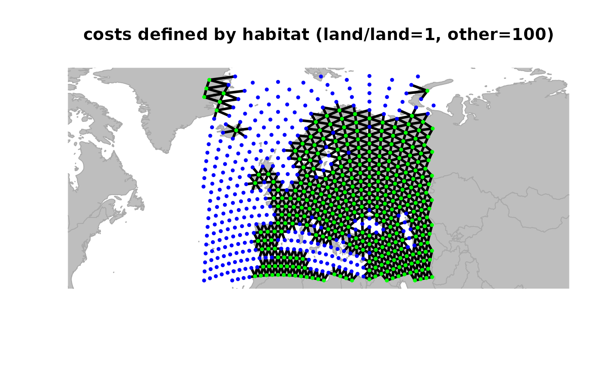
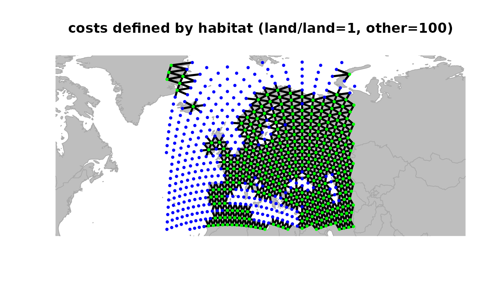

The class gGraph is a formal (S4) class storing geographic data.
Such data are composed of a set of geographic coordinates of vertices (or
'nodes'), and a graph describing connectivity between these vertices. Data
associated to the nodes can also be stored ('nodes attributes'), as well as
meta-information used when plotting the object, or when computing weights
associated to the edges based on nodes attributes.
Details
In all slots, nodes are uniquely identified by their name (reference is
taken from the row names of @coords slot).
Slots
coordsa matrix of spatial coordinates with two columns, being respectively longitude (from -180 to 180) and latitude. Positive numbers are intended as 'east' and 'north', respectively.
nodes.attra data.frame whose rows are nodes, and whose columns are different variables associated to the nodes.
metalist, most likely containing named data.frames (see Slots).
graphan object of the class graphNEL, from the
graphpackage (seeclass?graphNEL), describing connectivity among nodes.Note that none of these is mandatory:
new("gGraph")would work, and create an emptygGraphobject.
Objects from the class gGraph
gGraph objects can be created
by calls to new("gGraph", ...), where '...' can be the following
arguments:
Examples
## create an empty object
new("gGraph")
#>
#> === gGraph object ===
#>
#> @coords: spatial coordinates of 0 nodes
#> lon lat
#>
#> @nodes.attr: 0 nodes attributes
#> data frame with 0 columns and 0 rows
#>
#> @meta: list of meta information with 0 items
#>
#> @graph:
#> A graphNEL graph with undirected edges
#> Number of Nodes = 0
#> Number of Edges = 0
## plotting the object
plot(rawgraph.10k, reset = TRUE)
 ## zooming in
geo.zoomin(list(x = c(-6, 38), y = c(35, 73)))
title("Europe")
## to play interactively with graphics, use:
# geo.zoomin()
# geo.zoomout()
# geo.slide()
# geo.back()
## defining a new object restrained to visible nodes
x <- rawgraph.10k[isInArea(rawgraph.10k)]
plot(x, reset = TRUE, edges = TRUE)
title("x does just contain these visible nodes.")
## define weights for edges
x <- setCosts(x, attr.name = "habitat", method = "prod")
plot(x, edges = TRUE)
title("costs defined by habitat (land/land=1, other=100)")

## drop 'dead edges' (i.e. with weight 0)
x <- dropDeadEdges(x, thres = 10)
plot(x, edges = TRUE)
title("after droping edges with null weight")
## zooming in
geo.zoomin(list(x = c(-6, 38), y = c(35, 73)))
title("Europe")
## to play interactively with graphics, use:
# geo.zoomin()
# geo.zoomout()
# geo.slide()
# geo.back()
## defining a new object restrained to visible nodes
x <- rawgraph.10k[isInArea(rawgraph.10k)]
plot(x, reset = TRUE, edges = TRUE)
title("x does just contain these visible nodes.")
## define weights for edges
x <- setCosts(x, attr.name = "habitat", method = "prod")
plot(x, edges = TRUE)
title("costs defined by habitat (land/land=1, other=100)")

## drop 'dead edges' (i.e. with weight 0)
x <- dropDeadEdges(x, thres = 10)
plot(x, edges = TRUE)
title("after droping edges with null weight")